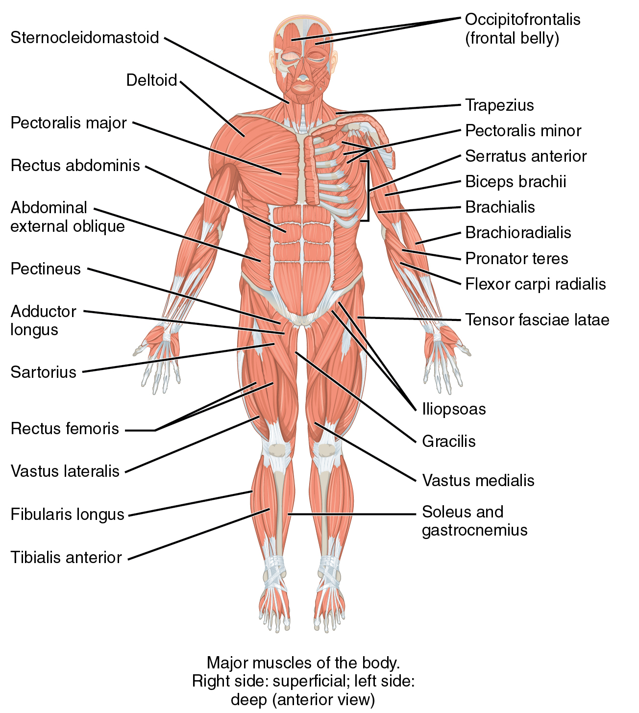

은 힘줄과 살을 통틀어 이르며,동물의 운동을 맡은 기관이다. 또한 기능 으로보아 수의근인 골격근과 불수의근인 내장근이 있으며, 구조적으로는 가로무늬근과 민무늬근이 있다.
근육과 이를 구성하는 근섬유, 근세포동물의 신체를 구성하는 중요 요소. 뼈와 함께 신체의 전체적인 형태를 잡아주며 움직임을 가능하게 한다. 뼈와 근육을 합해 근골격계라 부른다. 근섬유(근육 세포) 다발로 구성되어 있으며 동력을 냄과 동시에 뼈, 관절, 내장 등의 신체기관을 지켜주는 갑옷 역할도 하며 일부 호르몬을 분비하기도 한다. 당연히 생체이므로 작은 손상 정도는 자연치유로 복구되며 의도적으로 적당한 양의 손상을 주면 더 힘세고 강한 근육으로 발전할 수 있다. 동작의 중심인 관절의 구성요소이기도 하며, 관절의 움직임과 결합 유지를 담당한다. 관절의 결합은 인대가 모두 담당한다고 생각하기 쉽지만 실은 근육의 수축력이 없으면 관절의 결합력은 유지될 수 없다. 실제로 뇌졸중 등으로 반신이 마비된 환자의 경우, 마비된 팔을 평소에 슬링에 걸어두지 않으면 근육의 수축력이 팔의 무게를 상쇄시켜주지 못해 어깨 관절이 아탈구되어버린다. 우리가 먹는 고기는 기본적으로 근육이다.[1] 물론 근육에 붙은 지방과 건, 뼈에 붙은 인대도 먹지만(사람에 따라서는 버리기도 한다) 고기의 주성분은 근섬유 다발이다. 내장 역시 민무늬근(평활근)이라는 근육을 주로 먹는 것이다. 물론 여기도 지방과 장막이 붙어 있지만. 보통 외견상 눈에 잘 띄는 근육은 이두근, 삼두근, 복근, 대흉근, 광배근, 승모근등이 있다. 
주로 무산소 운동(근력 운동)을 통해 단련s할 수 있다. 여기에 적절한 BCAA(Branched-chain amino acid; 류신, 발린, 이소류신-분지사슬 아미노산)의 공급이 있으면 금상첨화. 미디어의 영향인지는 몰라도 근육질인 사람이 마른 사람보다 느릴 거라는 이미지가 있는데 현실에서는 근육이 없는 사람보다 근육 거구들이 당연히 더 빠르고 민첩하다. 애초에 그 '스피드'를 내기 위한 힘을 어디서 내는지 생각해보자. 체중 자체가 많이 나간다고 해도 근육량이 압도적이라 근육의 힘이 체중의 수 배 이상으로 강해지기 때문에 결과적으로 민첩성이 향상된다. 가장 빠른 단거리 스프린터들의 다리만 봐도 엄청나게 발달된 근육을 볼 수 있다.운동성을 극한까지 쥐어짜야 하는 운동선수와 같은 경우에는 여기서 조금 더 나간다. 무작정 근육만 키우기보다는 이러한 근육을 잘 운용할 수 있게끔 훈련을 병행함으로써 유연성과 운동 경험을 함께 쌓는데, 근육을 쓰는 방법이나 단련법에 따라서도 운동 능력이 크게 바뀌기 때문이다.[2] 또한 근육이 낼 수 있는 힘이 크다고 해서 항상 빠른 수축 운동이 가능한건 아니기 때문에 빠른 순발력이 필요한 운동은 더 영향이 크다. 따라서 일반인이 근육을 열심히 단련했다고 해도 전문적인 훈련을 받은 운동선수들의 운동능력을 쫓아가기는 매우 힘든 일이다. 근육질인 사람은 뻣뻣하다는 일련의 고정관념이 있는데, 물론 과도한 근육의 발달이 유연성을 어느정도 떨어뜨릴 수 있다. 근육이 원래 근섬유의 덩어리이다보니 근육이 발달했다는 것은 근섬유가 대규모로 촘촘히 짜여 있는 것을 의미한다. 고무줄 한 개가 고무줄 수십, 수백 개를 겹쳐놓은 것보다 더 쉽게 변형시킬 수 있는 것은 당연한 것과 같다. 하지만 근육량 때문에 유연성이 유의미하게 떨어질 정도로 근육을 발달시킨 사람들의 경우에는 웨이트트레이닝으로 일반인보다 특정 근육을 전문적으로 발달시킨 경우가 많다. 아이러니하게도 웨이트트레이닝의 알파이자 오메가인 스쿼트나 데드리프트를 제대로 하려면 상당한 유연성이 필요하다. 그래서 선천적으로 유연성이 부족해 벗윙크 같은 잘못된 자세가 나오는것을 교정하기위해 햄스트링같은 근육들의 유연성을 늘리는 스트레칭등이 일정단계를 넘으려면 반드시 필요하다.
물론 격투기나 단거리 달리기 등을 위한 실제 근력이 필요해서 근육을 키운 경우에는 말할 필요도 없다. 발차기든 달리기든 점프든 유연성이 받쳐주지 않는다면 제대로 된 동작을 할 수 없고 그런 종목들을 위해 근육을 과도해 보일정도로 키운 사람이 유연성 훈련만 빼놨을리가 없다. 발차기를 예로 들자면, 발 자체는 일정높이까지 올라가더라도 추가로 얼마나 골반을 집어넣을 수 있는지, 몸을 비틀어서 다양한 근육을 깊이 개입시킬 수 있는지에 따라 파워와 안정성이 크게 갈린다. 점프도 마찬가지로 유연성이 안 되면 동작이 짧아지고 동작이 짧아진다는 것 자체가 점프 한번에 담을 수 있는 근육의 개입량이 달라진다는 이야기인 셈. 근육이 발달된 사람의 경우 대부분의 일반인보다 훨씬 유연하다는 건 두말하면 잔소리. 심지어 굳이 따로 유연성 훈련을 안한다고 해도 유연성이 필요한 해당 동작들을 수행하는 것 자체만으로도 유연성은 계속 높아진다. 설령 근육을 강조한 주인공도 더 힘이 센 악당보다는 근육과 덩치가 작은 경우가 대부분인데 이는 상대적으로 약해보이는 주인공이나 영웅이 정의로운 속성이며 역경을 극복해야 한다는 설정 때문이다.